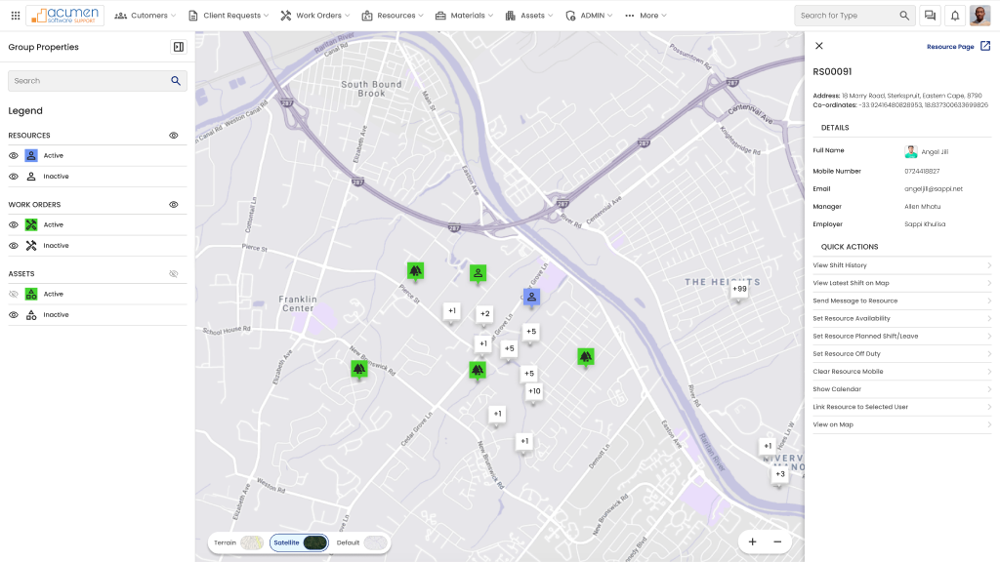

Run ID: a142b291-504c-47d2-bcd6-d12b618d0911 | Started: 2026-02-09T12:09:01.235Z | Finished: 2026-02-09T12:09:02.822Z
| Total targets | 1 |
|---|---|
| Total findings | 36 |
| Suppressed findings | 0 |
| Manual-review findings | 25 |
| Failed targets | 1 |
| Severity | Count |
|---|---|
| blocker | 11 |
| critical | 0 |
| major | 0 |
| minor | 0 |
Node ID: 26027:42977
URL: https://www.figma.com/design/hmsHl4RKNQLPsvL7ectyrO/Forcelink-Back-Office?node-id=26027-42977&t=kE1QYSLsBjLNyRjH-4

| Severity | Status | Rule | Criterion | Layer Path | Message | Evidence |
|---|---|---|---|---|---|---|
| blocker | failed | WCAG-2.5.8-target-size-minimum | 2.5.8 | Work Map - Individual Selection – 11 > Component 17 – 280 | Interactive target is 18.0x18.0px; minimum is 24x24px. | Node 26027:42978 (Component 17 – 280) |
| blocker | failed | WCAG-2.5.8-target-size-minimum | 2.5.8 | Work Map - Individual Selection – 11 > Component 17 – 293 | Interactive target is 18.0x18.0px; minimum is 24x24px. | Node 26027:42979 (Component 17 – 293) |
| blocker | failed | WCAG-2.5.8-target-size-minimum | 2.5.8 | Work Map - Individual Selection – 11 > Component 17 – 285 | Interactive target is 18.0x18.0px; minimum is 24x24px. | Node 26027:42980 (Component 17 – 285) |
| blocker | failed | WCAG-2.5.8-target-size-minimum | 2.5.8 | Work Map - Individual Selection – 11 > Component 17 – 286 | Interactive target is 18.0x18.0px; minimum is 24x24px. | Node 26027:42982 (Component 17 – 286) |
| blocker | failed | WCAG-2.5.8-target-size-minimum | 2.5.8 | Work Map - Individual Selection – 11 > Component 17 – 287 | Interactive target is 18.0x18.0px; minimum is 24x24px. | Node 26027:42983 (Component 17 – 287) |
| blocker | failed | WCAG-2.5.8-target-size-minimum | 2.5.8 | Work Map - Individual Selection – 11 > Component 17 – 288 | Interactive target is 18.0x18.0px; minimum is 24x24px. | Node 26027:42984 (Component 17 – 288) |
| blocker | failed | WCAG-2.5.8-target-size-minimum | 2.5.8 | Work Map - Individual Selection – 11 > Component 17 – 289 | Interactive target is 18.0x18.0px; minimum is 24x24px. | Node 26027:42985 (Component 17 – 289) |
| blocker | failed | WCAG-2.5.8-target-size-minimum | 2.5.8 | Work Map - Individual Selection – 11 > Component 17 – 284 | Interactive target is 18.0x18.0px; minimum is 24x24px. | Node 26027:42986 (Component 17 – 284) |
| blocker | failed | WCAG-2.5.8-target-size-minimum | 2.5.8 | Work Map - Individual Selection – 11 > Frame 4006 > Group 3845 > Group 3819 > Rectangle 684 | Interactive target is 40.0x22.0px; minimum is 24x24px. | Node 26027:42990 (Rectangle 684) |
| blocker | failed | WCAG-2.5.8-target-size-minimum | 2.5.8 | Work Map - Individual Selection – 11 > Frame 4006 > Group 4005 > Group 3819 > Rectangle 684 | Interactive target is 40.0x22.0px; minimum is 24x24px. | Node 26027:42995 (Rectangle 684) |
| blocker | failed | WCAG-2.5.8-target-size-minimum | 2.5.8 | Work Map - Individual Selection – 11 > Frame 4006 > Group 4004 > Group 3819 > Rectangle 684 | Interactive target is 40.0x22.0px; minimum is 24x24px. | Node 26027:43000 (Rectangle 684) |
| critical | needs-manual-review | WCAG-1.4.3-text-contrast-minimum | 1.4.3 | Work Map - Individual Selection – 11 > Frame 4006 > Group 3845 > Terrain | Could not reliably determine text/background colors for contrast calculation. | Node 26027:42992 (Terrain) |
| critical | needs-manual-review | WCAG-1.4.3-text-contrast-minimum | 1.4.3 | Work Map - Individual Selection – 11 > Frame 4006 > Group 4005 > Satellite | Could not reliably determine text/background colors for contrast calculation. | Node 26027:42997 (Satellite) |
| critical | needs-manual-review | WCAG-1.4.3-text-contrast-minimum | 1.4.3 | Work Map - Individual Selection – 11 > Frame 4006 > Group 4004 > Default | Could not reliably determine text/background colors for contrast calculation. | Node 26027:43002 (Default) |
| critical | needs-manual-review | WCAG-1.4.3-text-contrast-minimum | 1.4.3 | Work Map - Individual Selection – 11 > Location Info > Address: 18 Marry Road, Sterkspruit, Eastern Cape, 8790 Co-ordinates: -33.92416480828953, 18.837300633699826 | Could not reliably determine text/background colors for contrast calculation. | Node 26027:43014 (Address: 18 Marry Road, Sterkspruit, Eastern Cape, 8790 Co-ordinates: -33.92416480828953, 18.837300633699826) |
| critical | needs-manual-review | WCAG-1.4.3-text-contrast-minimum | 1.4.3 | Work Map - Individual Selection – 11 > Location Info > Location Stack | Could not reliably determine text/background colors for contrast calculation. | Node 26027:43015 (Location Stack) |
| critical | needs-manual-review | WCAG-1.4.3-text-contrast-minimum | 1.4.3 | Work Map - Individual Selection – 11 > Location Info > Location Details > Location Header > Location Title > Location Title > Resources | Could not reliably determine text/background colors for contrast calculation. | Node 26027:43022 (Resources) |
| critical | needs-manual-review | WCAG-1.4.3-text-contrast-minimum | 1.4.3 | Work Map - Individual Selection – 11 > Location Info > Location Details > Location Header > Location Title > Location Title > Item Count Container > Item Count Container > 1 items | Could not reliably determine text/background colors for contrast calculation. | Node 26027:43027 (1 items) |
| critical | needs-manual-review | WCAG-1.4.3-text-contrast-minimum | 1.4.3 | Work Map - Individual Selection – 11 > Resource-single-selection-quick-menu > Frame 4084 > Frame 15812 > Group 4022 > Group 3892 > Resource Page | Could not reliably determine text/background colors for contrast calculation. | Node 26027:43072 (Resource Page) |
| critical | needs-manual-review | WCAG-1.4.3-text-contrast-minimum | 1.4.3 | Work Map - Individual Selection – 11 > Resource-single-selection-quick-menu > Frame 4084 > RS00091 | Could not reliably determine text/background colors for contrast calculation. | Node 26027:43073 (RS00091) |
| critical | needs-manual-review | WCAG-1.4.3-text-contrast-minimum | 1.4.3 | Work Map - Individual Selection – 11 > Resource-single-selection-quick-menu > Frame 4084 > Address: 18 Marry Road, Sterkspruit, Eastern Cape, 8790 Co-ordinates: -33.92416480828953, 18.837300633699826 | Could not reliably determine text/background colors for contrast calculation. | Node 26027:43074 (Address: 18 Marry Road, Sterkspruit, Eastern Cape, 8790 Co-ordinates: -33.92416480828953, 18.837300633699826) |
| critical | needs-manual-review | WCAG-1.4.3-text-contrast-minimum | 1.4.3 | Work Map - Individual Selection – 11 > Resource-single-selection-quick-menu > Frame 4084 > Frame 15812 > Frame 15815 > Full Name | Could not reliably determine text/background colors for contrast calculation. | Node 26027:43157 (Full Name) |
| critical | needs-manual-review | WCAG-1.4.3-text-contrast-minimum | 1.4.3 | Work Map - Individual Selection – 11 > Resource-single-selection-quick-menu > Frame 4084 > Frame 15812 > Frame 15815 > Frame 15813 > Angel Jili | Could not reliably determine text/background colors for contrast calculation. | Node 26027:43160 (Angel Jili) |
| critical | needs-manual-review | WCAG-1.4.3-text-contrast-minimum | 1.4.3 | Work Map - Individual Selection – 11 > Resource-single-selection-quick-menu > Frame 4084 > Frame 15812 > Frame 15815 > Mobile Number | Could not reliably determine text/background colors for contrast calculation. | Node 26027:43162 (Mobile Number) |
| critical | needs-manual-review | WCAG-1.4.3-text-contrast-minimum | 1.4.3 | Work Map - Individual Selection – 11 > Resource-single-selection-quick-menu > Frame 4084 > Frame 15812 > Frame 15815 > 0724418827 | Could not reliably determine text/background colors for contrast calculation. | Node 26027:43163 (0724418827) |
| critical | needs-manual-review | WCAG-1.4.3-text-contrast-minimum | 1.4.3 | Work Map - Individual Selection – 11 > Resource-single-selection-quick-menu > Frame 4084 > Frame 15812 > Frame 15815 > Email | Could not reliably determine text/background colors for contrast calculation. | Node 26027:43165 (Email) |
| critical | needs-manual-review | WCAG-1.4.3-text-contrast-minimum | 1.4.3 | Work Map - Individual Selection – 11 > Resource-single-selection-quick-menu > Frame 4084 > Frame 15812 > Frame 15815 > angeljili@sappi.net | Could not reliably determine text/background colors for contrast calculation. | Node 26027:43166 (angeljili@sappi.net) |
| critical | needs-manual-review | WCAG-1.4.3-text-contrast-minimum | 1.4.3 | Work Map - Individual Selection – 11 > Resource-single-selection-quick-menu > Frame 4084 > Frame 15812 > Frame 15815 > Manager | Could not reliably determine text/background colors for contrast calculation. | Node 26027:43168 (Manager) |
| critical | needs-manual-review | WCAG-1.4.3-text-contrast-minimum | 1.4.3 | Work Map - Individual Selection – 11 > Resource-single-selection-quick-menu > Frame 4084 > Frame 15812 > Frame 15815 > Allen Mhatu | Could not reliably determine text/background colors for contrast calculation. | Node 26027:43169 (Allen Mhatu) |
| critical | needs-manual-review | WCAG-1.4.3-text-contrast-minimum | 1.4.3 | Work Map - Individual Selection – 11 > Resource-single-selection-quick-menu > Frame 4084 > Frame 15812 > Frame 15815 > Employer | Could not reliably determine text/background colors for contrast calculation. | Node 26027:43171 (Employer) |
| critical | needs-manual-review | WCAG-1.4.3-text-contrast-minimum | 1.4.3 | Work Map - Individual Selection – 11 > Resource-single-selection-quick-menu > Frame 4084 > Frame 15812 > Frame 15815 > Sappi Khulisa | Could not reliably determine text/background colors for contrast calculation. | Node 26027:43172 (Sappi Khulisa) |
| critical | needs-manual-review | WCAG-1.4.3-text-contrast-minimum | 1.4.3 | Work Map - Individual Selection – 11 > Legend > Frame 4084 > Frame 15812 > RS00091 | Could not reliably determine text/background colors for contrast calculation. | Node 26027:45553 (RS00091) |
| critical | needs-manual-review | WCAG-1.4.3-text-contrast-minimum | 1.4.3 | Work Map - Individual Selection – 11 > Legend > Frame 15859 > Frame 15856 > Guides | Could not reliably determine text/background colors for contrast calculation. | Node 26027:45670 (Guides) |
| critical | needs-manual-review | WCAG-1.4.3-text-contrast-minimum | 1.4.3 | Work Map - Individual Selection – 11 > Component 32 > Frame 4007 > Satellite | Could not reliably determine text/background colors for contrast calculation. | Node 26056:39773 (Satellite) |
| critical | needs-manual-review | WCAG-1.4.3-text-contrast-minimum | 1.4.3 | Work Map - Individual Selection – 11 > Component 32 > Frame 4005 > Satellite | Could not reliably determine text/background colors for contrast calculation. | Node 26056:39776 (Satellite) |
| critical | needs-manual-review | WCAG-1.4.3-text-contrast-minimum | 1.4.3 | Work Map - Individual Selection – 11 > Component 32 > Frame 4006 > Satellite | Could not reliably determine text/background colors for contrast calculation. | Node 26056:39779 (Satellite) |
| Criterion | Layer Path | Prompt |
|---|---|---|
| 1.3.1 | Figma Node 26027:42977 | Verify structure and relationships are programmatically determinable (headings, grouped controls, labels). |
| 1.4.1 | Figma Node 26027:42977 | Verify color is not the only means used to convey state or meaning. |
| 2.4.7 | Figma Node 26027:42977 | Verify focus indicators are clearly visible for all interactive components. |
| 2.4.11 | Figma Node 26027:42977 | Verify focused elements are not fully obscured by fixed/sticky UI. |
| 3.3.2 | Figma Node 26027:42977 | Verify form controls include persistent labels/instructions and clear error guidance. |
No target warnings.